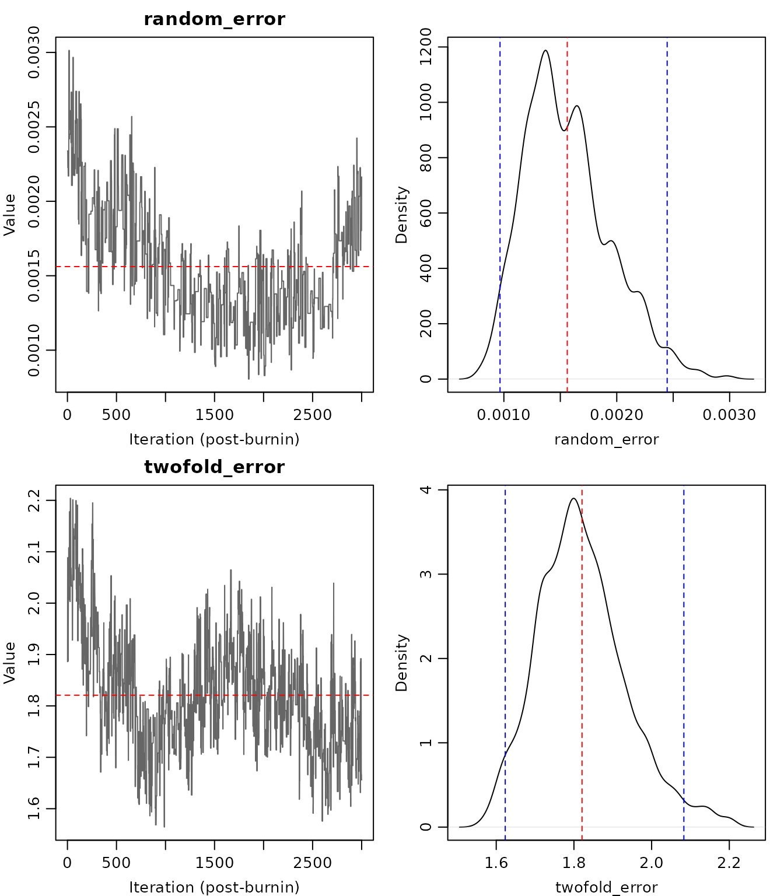
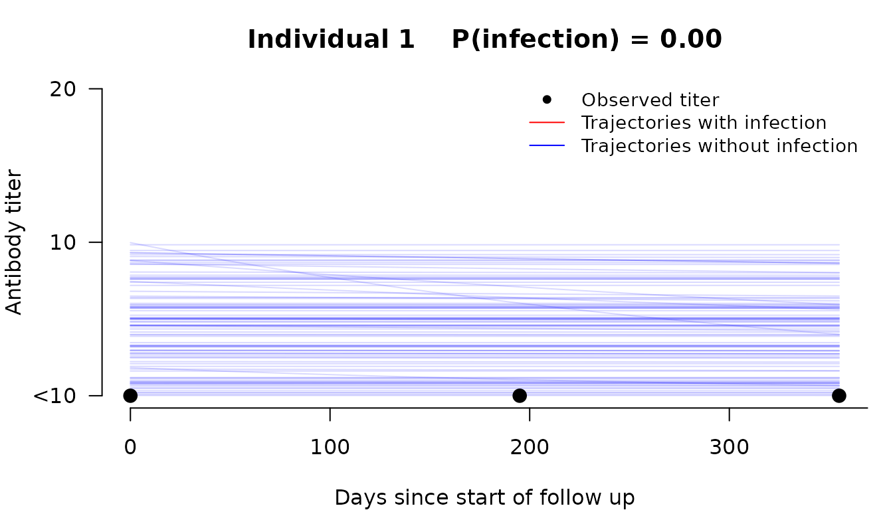

Overview
seroreconstruct is an R package for Bayesian inference
of influenza virus infection status from serial antibody measurements.
It relaxes the traditional 4-fold rise rule by jointly modeling antibody
boosting after infection, waning over time, and measurement error —
estimating individual-level infection probabilities from
hemagglutination inhibition (HAI) titer data.
The statistical framework is described in Tsang et al. (2022) Nature Communications 13:1557.
Input data
The package requires two data frames:
-
inputdata— one row per individual with columns:-
age_group: integer (0 = children, 1 = adults, 2 = older adults) -
start_time,end_time: follow-up period (integer days) -
time1,time2,time3: serum collection dates (integer days) -
HAI_titer_1,HAI_titer_2,HAI_titer3: HAI titers at each collection
-
-
inputILI— daily influenza-like illness activity, with rows corresponding to consecutive days. The row indices must cover the range ofstart_timetoend_timeininputdata.
library(seroreconstruct)
data("inputdata")
data("flu_activity")
head(inputdata)
#> age_group start_time end_time time1 time2 time3 HAI_titer_1 HAI_titer_2
#> 1 0 837 1192 837 1032 1192 0 0
#> 2 2 837 1192 837 1032 1192 0 0
#> 3 2 837 1192 837 1032 1192 0 0
#> 4 0 837 1192 837 1032 1192 4 4
#> 5 0 845 1191 845 1034 1191 0 0
#> 6 2 845 1191 845 1034 1191 0 0
#> HAI_titer3
#> 1 0
#> 2 0
#> 3 0
#> 4 4
#> 5 0
#> 6 0
dim(inputdata)
#> [1] 1753 9Fitting the model
The main function sero_reconstruct() runs a Bayesian
MCMC to estimate infection probabilities and antibody dynamics
parameters. For real analyses, use at least 100,000 iterations with
appropriate burn-in and thinning.
fit <- sero_reconstruct(inputdata, flu_activity,
n_iteration = 200000, burnin = 100000, thinning = 10)For this vignette, we use a short run for illustration:
fit <- sero_reconstruct(inputdata, flu_activity,
n_iteration = 5000, burnin = 2000, thinning = 1)
#> 1000
#> 2000
#> 3000
#> 4000
#> MCMC complete in 67 seconds. Use summary() to view estimates.
fit
#> seroreconstruct fit
#> Individuals: 1753
#> Age groups: 3
#> Posterior samples: 3000
#> Runtime: 67 seconds
#>
#> Use summary() to extract model estimates.Viewing results
The summary() method extracts key estimates with 95%
credible intervals:
summary(fit)
#> Variable
#> Random error (%)
#> Two-fold error (%)
#> Fold-increase after infection for children (Boosting)
#> Fold-decrease after 1 year for children (Waning)
#> Fold-increase after 1 year for adults (Boosting)
#> Fold-decrease after 1 year for adults (Waning)
#> Infection probability for children
#> Infection probability for adults
#> Infection probability for older adults
#> Infection probability for children with pre-epidemic HAI titer < 10
#> Infection probability for adults with pre-epidemic HAI titer < 10
#> Infection probability for older adults with pre-epidemic HAI titer < 10
#> Relative risk for children (Ref: Adults)
#> Relative risk for older adults (Ref: Adults)
#> Relative risk for children with pre-epidemic HAI titer < 10 (Ref: Adults with pre-epidemic HAI titer < 10)
#> Relative risk for older adults with pre-epidemic HAI titer < 10 (Ref: Adults with pre-epidemic HAI titer < 10)
#> Point estimate Lower bound Upper bound
#> 1.56 0.97 2.45
#> 4.05 4.93 3.11
#> 11.47 7.28 16.16
#> 1.03 1.01 1.06
#> 7.46 5.95 9.21
#> 1.05 1.02 1.08
#> 0.17 0.14 0.21
#> 0.19 0.15 0.22
#> 0.13 0.09 0.18
#> 0.46 0.39 0.55
#> 0.30 0.25 0.36
#> 0.21 0.14 0.29
#> 0.95 0.72 1.21
#> 1.57 1.25 1.93
#> 0.71 0.47 0.99
#> 0.72 0.49 1.00The summary table includes:
- Random error (%) and Two-fold error (%): measurement error parameters
- Boosting: fold-increase in antibody titer after infection
- Waning: fold-decrease in antibody titer per year post-infection
- Infection probability: overall and stratified by baseline HAI titer
Visualization
MCMC diagnostics
Check convergence with trace plots and posterior density plots:
plot_diagnostics(fit, params = c("random_error", "twofold_error"))
Antibody trajectories
Visualize posterior trajectories for individual participants. Red lines show trajectories where infection occurred; blue lines show trajectories without infection.
plot_trajectory(fit, id = 1)
Infection probabilities
Forest plot of posterior infection probabilities with 95% credible intervals:
plot_infection_prob(fit)Tables
Extract parameter estimates and individual-level results as data frames:
# Model parameter estimates
table_parameters(fit)
#> Parameter Mean Median Lower Upper
#> 1 random_error 0.001561569 0.001511629 0.0009659599 0.002446555
#> 2 twofold_error 1.820836756 1.809247817 1.6232064275 2.082991452
#> 3 boosting_children 3.520090978 3.597991901 2.8637652262 4.014747117
#> 4 waning_children 0.038526651 0.035308594 0.0139260350 0.079819865
#> 5 boosting_adults 2.899683177 2.896135222 2.5721652210 3.203945802
#> 6 waning_adults 0.067101881 0.063985949 0.0348443278 0.113601082
#> 7 inf_prob_children 0.675260031 0.666838760 0.5296965836 0.851994880
#> 8 inf_prob_adults 0.381066039 0.377426102 0.3036799853 0.477668922
#> 9 inf_prob_older_adults 0.258153829 0.251832444 0.1682203170 0.371903177
#> 10 hai_coef -0.612325028 -0.612387133 -0.8025365173 -0.448934246
# Per-individual infection probabilities
head(table_infections(fit))
#> Individual Infection_prob Infection_time_mean Baseline_titer_mean
#> 1 1 0 NA 0.50
#> 2 2 0 NA 0.48
#> 3 3 0 NA 0.48
#> 4 4 0 NA 4.48
#> 5 5 0 NA 0.52
#> 6 6 0 NA 0.49Subgroup analysis
Compare infection rates across groups by fitting independent MCMCs:
fit_by_age <- sero_reconstruct(inputdata, flu_activity,
n_iteration = 200000, burnin = 100000,
thinning = 10, group_by = ~age_group)
summary(fit_by_age)Joint model with shared parameters
When comparing groups, measurement error is a lab assay property — it is shared across all groups. You can additionally share boosting/waning if the groups are expected to have similar antibody dynamics:
# Share all parameters except infection probability
fit_joint <- sero_reconstruct(inputdata, flu_activity,
n_iteration = 200000, burnin = 100000,
thinning = 10,
group_by = ~age_group,
shared = c("error", "boosting_waning"))
summary(fit_joint)Simulation
Generate synthetic data for power analysis or validation:
data("para1")
data("para2")
sim <- simulate_data(inputdata, flu_activity, para1, para2)
names(sim)
#> [1] "age_group" "start_time" "end_time" "time1" "time2"
#> [6] "time3" "HAI_titer_1" "HAI_titer_2" "HAI_titer3"The simulated data can be passed directly to
sero_reconstruct() for simulation-recovery studies.
Citation
To cite seroreconstruct in publications:
Tsang TK, Perera RAPM, Fang VJ, Wong JY, Shiu EY, So HC, Ip DKM, Malik Peiris JS, Leung GM, Cowling BJ, Cauchemez S. (2022). Reconstructing antibody dynamics to estimate the risk of influenza virus infection. Nature Communications 13:1557. doi: 10.1038/s41467-022-29310-8